4 Első lépések
Az OpenSesame sikeres telepítése után indítsuk el a programot. A megnyitás és a teljes képernyőre nagyítás után a 4.1 ábrán látható képernyőképhez hasonló fogad minket.
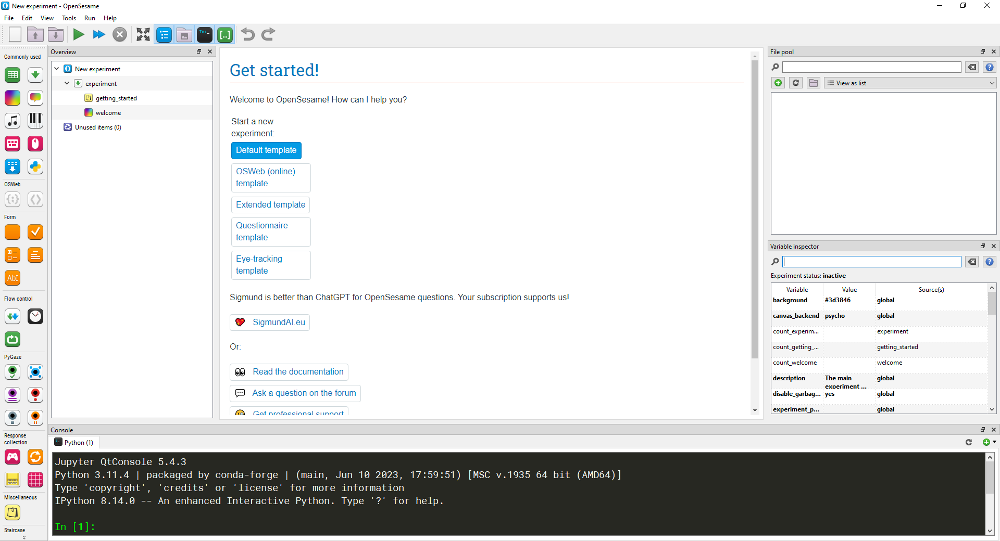
A 4.1 ábrán bekapcsoltuk az összes megjeleníthető ablakot. A saját verziónkban is kapcsoljuk be ezeket, az Eszköztár négy speciális ikonjának segítségével. Az Eszköztár a menü alatt található (4.2 ábra), és az OpenSesame gyakran használt funkcióit tartalmazza.
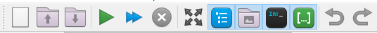
Az OpenSesame ablakait az Eszköztár négy különböző ikonjával kapcsolhatjuk be, illetve ki (4.3 ábra).
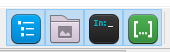
A fenti gombok a View menüpontból is elérhetők, és ott megtaláljuk az ikonok jelentését is (4.4 ábra).
Az egyes ikonok jelentése:
Az
Áttekintő ablakki/be kapcsolása (Overview area)Állomány gyűjtő ablakki/be kapcsolása (File pool)Konzolki/be kapcsolása (Console)Változók nyomkövetése ablakki/be kapcsolása (Variable inspector)
Az ikonok ki/be kapcsolásával alakítsuk ki saját OpenSesame programunkban a 4.2 ábrán látható képernyőképet. A View menüpont használatával is kapcsoljuk ki, majd be ezeket az ablakokat. Próbáljuk ki a View menüpont többi parancsát is.
Térjünk vissza az 4.1 ábrán látható képernyőképhez. Az ábrán megjelenő területek (ablakok) a következőek:
- Az
Item eszköztáregy mozgatható, de be nem zárható ablak, amely a képernyő bal oldalán jelenik meg. Legtöbbször a fogd és vidd eljárással elemeket fogunk meg és viszünk át azÁttekintő ablakba.
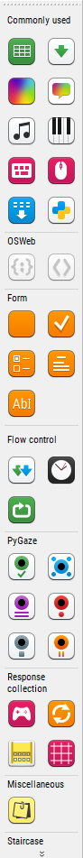
Áttekintő ablak(Overview), amely az éppen szerkesztett kísérlet teljes leírását, szerkezetét tartalmazza. Egy kísérlet lényegében egymás alá helyezett itemek sorozata. Minél több item szerepel azÁttekintő ablakban, annál bonyolultabb a kísérletünk. A 4.6 ábrán látható kísérlet nagyon egyszerű, mindössze 2 hozzáadott itemet tartalmaz (getting_startedéswelcome).
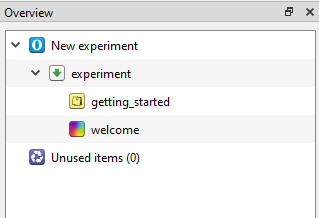
- A
Tab ablak, amely a leggyakrabban használt szerkesztési terület. Alapértelmezés szerint egy köszöntő szöveget és néhány nyomógombot tartalmaz (4.7 ábra), de később látni fogjuk, hogy azÁttekintő ablakban éppen kiválasztott item szerkesztését tudjuk itt elvégezni.
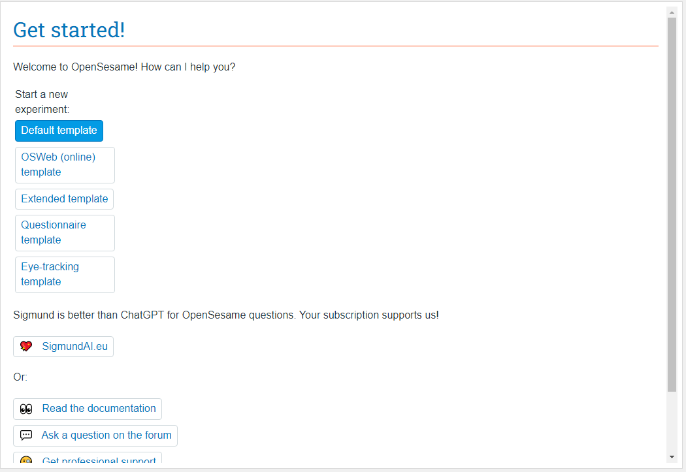
Állomány gyűjtő, amely a kísérletben használt kép- és hangingerek megjelenítéséért felelős állományokat tartalmazza (4.8 ábra). Tipikusan tehát.pngés.mp3vagy.oggállományokat tartalmaz, de bármilyen állomány hozzáadható a kísérlethez. Ezek az állományok az éppen szerkesztett, a kísérlet teljes leírásáért felelős OpenSesame adatállományban (.osexpkiterjesztéssel) tárolódnak, így a kísérletnek nem lesznek külső függőségeik, nem kell tartanunk attól, hogy a kísérlet futtatása során nem talál egy képet vagy hangot az OpenSesame. Ez lényeges eltérés az Inquisit.iqxállományaihoz képest, ugyanis azok csak a kísérletet leíró szkriptsorokat tartalmazzák, a kísérletben felhasznált képeket és hangokat nem.
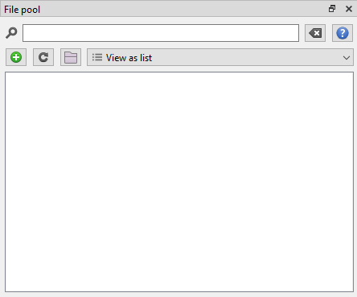
- A
Változók nyomkövetése ablak, amely a kísérletben felhasznált és potenciálisan menthető változók nevét és aktuális értékét tartalmazza (4.9 ábra). A kísérletünk helyes működését tudjuk itt ellenőrizni.
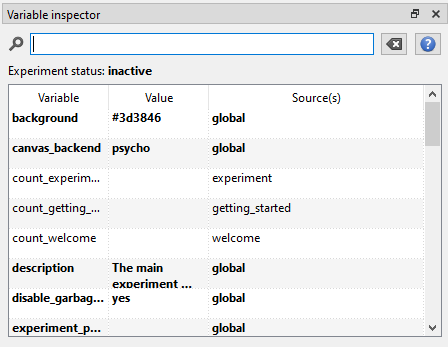
- A
Konzol ablak, amely a kísérlet futtatásáért felelős Python rendszer üzeneteit tartalmazz (4.10 ábra). A legtöbb esetben nem kell figyelnünk a konzol sorait, de futási hiba esetén a hiba lehetséges oka a konzolban megjelenhet.
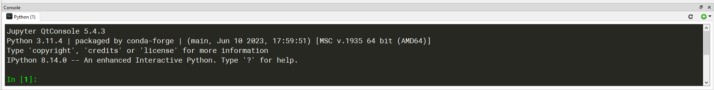
Vegyük birtokba az OpenSesame felhasználói felületét. Az ablakok ki/be kapcsolása után próbáljuk ki az Áttekintő ablakot. Kattintsunk az Áttekintő ablak minden egyes elemén, és vegyük észre, hogyan változik meg a Tab ablak tartalma. Itt az egyes itemek szerkesztésére van lehetőség, nézzük át a lehetőségeinket. Fogd és vidd eljárással tegyünk át itemeket az Áttekintő ablakba, és nézzük meg ezek szerkesztési lehetőségeit. Ismerjük meg az itemeket a https://osdoc.cogsci.nl/ oldal Items menüpontja segítségével. Ha a felület valamely elemét nem uraljuk, forduljunk segítségért a https://osdoc.cogsci.nl/4.0/manual/interface/ oldalhoz.
4.1 Munka az OpenSesam-ben
A felület egyes elemeinek megismerése után, tekintsük át az OenSesame funkcióit. Nagyon leegyszerűsítve a teljes munkafolyamat az Opensesam-ban (és az Inquisitben is) a következő lépésekből áll:
A kísérletet leíró állomány megnyitása vagy létrehozása
OpenSesamban a kísérletet egy
.osexpkiterjesztésű állományban tároljuk.Inquisitben
.iqxkiterjesztésű állományt használunk.
A kísérletet leíró állomány szerkesztése
OpenSesam-ban ez a szerkesztési folyamat a grafikus felületen történő egérkattintásokat, fogd és vidd műveleteket, illetve vezérlőelemek (például beviteli mezők, listadobozok) tartalmának meghatározását jelenti. A folyamat tehát rendkívül felhasználóbarát.
Inquisitben egy HTML-hez hasonló szkriptnyelven fogalmazzuk meg a kísérlet menetét és annak minden elemét. Az OpenSesam-hoz hasonló, grafikus szerkesztési lehetőséget az Inquisit nem tartalmaz.
A kísérletet leíró állomány tesztelése
- Az OpenSesam és az Inquisit is biztosít lehetőséget a kísérlet gyors és részletes áttekintésére is. Meg tudunk győződni, arról hogy az elkészült kísérletünk hibamentes, és minden kívánt összetevőt tartalmaz. Ezzel alkalmassá válik arra, hogy éles környezetben, kísérleti személyek hívásával, a tényleges adatgyűjtő tevékenységet el tudjuk kezdeni.
Adatgyűjtés az elkészült, kísérletet leíró állomány segítségével
Az OpenSesam (és az Inquisit is) lehetőséget ad arra, hogy az elkészült állományt éles környezetben bevessük, azaz a kísérletben résztvevő személyek számra lefuttassuk a kísérletet: a résztvevők kitöltik (megadják a válaszokat) a kísérletben szereplő kérdésekre. A kísérlet futtatása magába foglalja a következő lépéseket:
A kísérleti személy azonosítja magát a program számára. Ezt a lépést rendszerint a kísérlet vezetője végzi. Ez a lépés kulcsfontosságú, mert a választott azonosító a kísérleti személy válaszaival együtt kerül tárolásra.
A kísérleti személy végrehajtja a kísérletet (vagyis különböző ingerekre különböző válaszokat ad).
A kísérlet végén a kísérleti személy válaszai és a kísérlet elején választott azonosító tárolásra kerül. Az OpenSesame és az Inqusit is tagolt szöveges (CSV) állományban tárolja ezeket.
4.2 Példa kísérletek áttekintése
A tipikus munkafolyamat lépéséit az előző fejezetben részleteztük. Ebben a részben a gyakorlatban is bemutatjuk a munkafolyamat egyes lépéseit úgy, hogy segítségül hívunk mások által korábban készített kísérleteket. A teljes folyamatból kihagyjuk azt a lépést, amely kísérlet létrehozását részletezi, ezt a következő fejezetben mutatjuk be. Jelen fejezet célja, hogy
tovább barátkozzunk az OpenSesame felhasználói felületével, és
megértsük a kísérlet fogalmát, valamint a munkafolyamat lépéseit.
4.2.1 Példa kísérletek futtatása
Első lépésként tekintsük Tools / Example experiments menüpontot, amely számos beépített elkészített OpenSesame kísérlet tartalmaz (4.11 ábra).
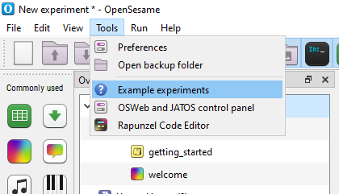
A menüpont kiválasztása után a Tab ablakban nyílik lehetőség a beépített kísérletek megnyitására ( 4.12 ábra).
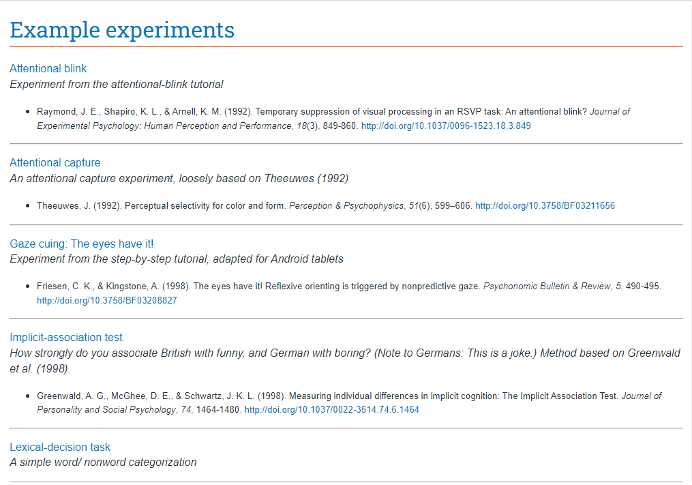
Válasszuk ki az első, Attentional blink nevű kísérletet. Amennyiben dialógus doboz jelenne meg a meglévő kísérlet mentésével kapcsolatban, válasszuk a No opciót.
Az Attentional blink nevű kísérletet (Raymond és mtsai., 1992) a vizuális feldolgozás ideiglenes elnyomásáról szól egy gyors, sorozatos vizuális bemutatási (RSVP) feladatban. A résztvevőket arra kérték, hogy azonosítsanak egy részben meghatározott betűt, majd ismerjenek fel egy teljesen meghatározott betűt.
Miután az OpenSesame betöltötte a kért kísérletet, látható, hogy a az Áttekintő ablakszámos itemet tartalmaz (4.13). Ezek jelentik a kísérlet megvalósítását.
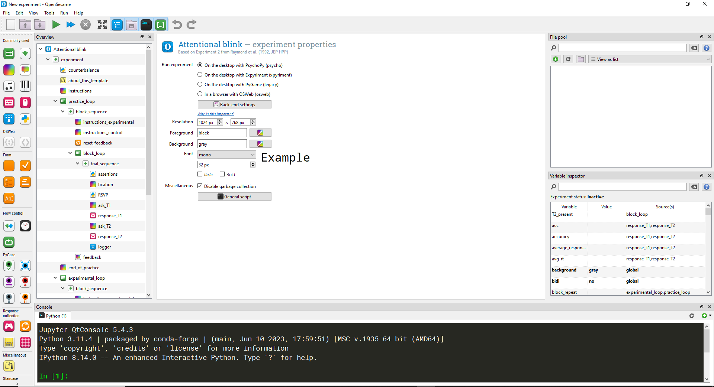
Anélkül, hogy bármi további információnk lenne a kísérletről, futtassuk le. Nyomjuk meg a Ctrl-R gyorsbillentyűt. Megjelenik egy dialógus doboz (4.14 ábra), amely a kísérleti személy azonosításáért felelős. Most az OK gombbal nyugtázzuk a dialógus dobozt, ugyanis nem éles szituációban vagyunk, a 0 azonosító megfelelő lehet.
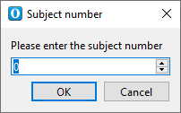
A kísérlet elindulása előtt még egy Choose location for logfile (press 'escape' for default location) dialógusdoboz is megjelenik, ahol a korábban megadott 0 azonosítóhoz tartozó válaszállomány (subject-0.csv) számára egy könyvtárat kell találnunk. Mindig adjuk meg a mentés pontos helyét, ne léjünk ki az ESC billentyűvel. A Mentés gomb megnyomása után elindul a kísérlet. Próbáljuk ki, járjunk el az utasításoknak megfelelően.
Az Attentional blink nevű kísérletet csak egy a beépített kísérletek között, próbáljunk ki minél többet. Nyissunk meg egyet a Tools / Example experiments menüponton keresztül, majd futtassuk a Ctrl-R gyorsbillentyűvel, hajtsuk végre, majd nyissunk meg egy újat, és így tovább.
4.2.2 A kísérlet elemei
Korábban megbeszéltük, hogy a munka az OpenSesam-ban (és az Inquisit-ben) a következő lépéseket tartalmazza:
A kísérletet leíró állomány megnyitása vagy létrehozása.
A kísérletet leíró állomány szerkesztése.
A kísérletet leíró állomány tesztelése.
Adatgyűjtés az elkészült, kísérletet leíró állomány segítségével.
1. A kísérletet leíró állomány megnyitása vagy létrehozása. Ez a lépés elengedhetetlen, hiszen a létrehozandó/szerkesztendő/futtatandó kísérletet természetesen meg kell nyitnunk. Ez egy létező .osexp állomány megnyitását, vagy egy új .osexp állomány létrehozását jelenti (Inquisit-ben .iqx). A szokásos menüpontok a File / Open vagy a File / New. A tanulási folyamatban beépített kísérleteket is használhatunk, így bepillanthatunk, milyen összetevőket tartalmaz egy komoly kísérlet. Épp ezt tesszük ebben a fejezetben. Más esetben azonban egy üres kísérlettel kezdünk, és magunk építjük fel a teljes kísérletet egyes elemeit, a blokkokat, kérdéseket stb. Ezt tesszük a következő fejezetben.
2. A kísérletet leíró állomány szerkesztése. Az kísérlet létrehozása ebben a fázisban történik. Tipikus műveletek:
Item átemelése a fogd és vidd eljárással az
Item eszköztárból azÁttekintés ablakba.Kattintással item kijelölése az
Áttekintés ablakban és a kijelölt item szerkesztése aTab ablakban.
Nyissuk meg az Attentional blink nevű kísérletet a Tools / Example experiments menüponton keresztül. Tekintsük a az Áttekintés ablak tartalmát, amely a teljes kísérlet leírásáért felelős itemeket tartalmazza. Ha egy item fölé visszük az egeret, akkor egy Type és egy Description információ jelenik meg a tooltip-ben. Keressük meg a kapcsolatot az egyes itemek esetén az adott itemhez tartozó ikon alakja és a tooltip-ben lévő információ alapján: (1) az Item eszköztár elemeihez; (2) a Tab ablak fejlécében lévő információhoz.
Miután egy vagy több példa kísérletet lefuttattunk, képet kaphattunk arról, milyen elemekből épül fel egy tipikus kísérlet. A legfontosabb elemek a következők:
instrukciós oldalak: tájékoztatjuk a kísérleti személy a kísérlet lefolyásáról, elmagyarázzuk, hogy pontosan mi lesz a dolga a kísérlet alatt
információs oldalak (opcionális): a kísérleti személy a kísérlet során nyújtott teljesítményéről visszajelzést kap. Tipikusan a reakcióidőt és a helyes válaszok arányát közöljük.
részek: a kísérletben megkülönböztetünk gyakorló és éles részt. A gyakorló rész opcionális, de a legtöbb kísérletben szerepel. A gyakorló részben adott válaszokat többnyire nem értékeljük ki.
blokkok: az egyes részekben (gyakorló és éles) a kérdések általában valamilyen terv szerint érkeznek a kísérleti személyhez. Ennek a kísérleti tervnek a szervezési egysége a blokk. Később látunk kísérleti terv megvalósítására példát, most fogadjuk el, hogy a kísérlet egyes részei blokkokból állnak.
kérdések: a kísérlet legfontosabb egysége, hiszen az itt megjelenő ingerekre kérjük és tároljuk el a kísérleti személy válaszát. A kérdések blokkokba szerveződnek, és a blokkok adják a kísérlet gyakorló és éles részét.
ingerek: a kérdésekben megjelenő ingerek, amelyek lehetnek szöveges, kép, hang vagy videó (és animáció) jellegű ingerek.
válaszok: a kérdésben a kísérleti személy válasza a megjelenő ingerre, tipikus a billentyűzet és az egér használata válaszadáshoz.
OpenSesame-ban a kísérlet fenti elemei az Áttekintő ablakban jelennek meg. Ennek megfelelően vannak olyan itemek, amelyek az intsrukciós oldalak, az információs oldalak stb. kialakításáért felelősek. A 4.15 ábrán összekapcsoltuk az Áttekintő ablak tartalmát a kísérletet felépítő elemekkel. Az Attentional blink nevű kísérletet vettük alapul.
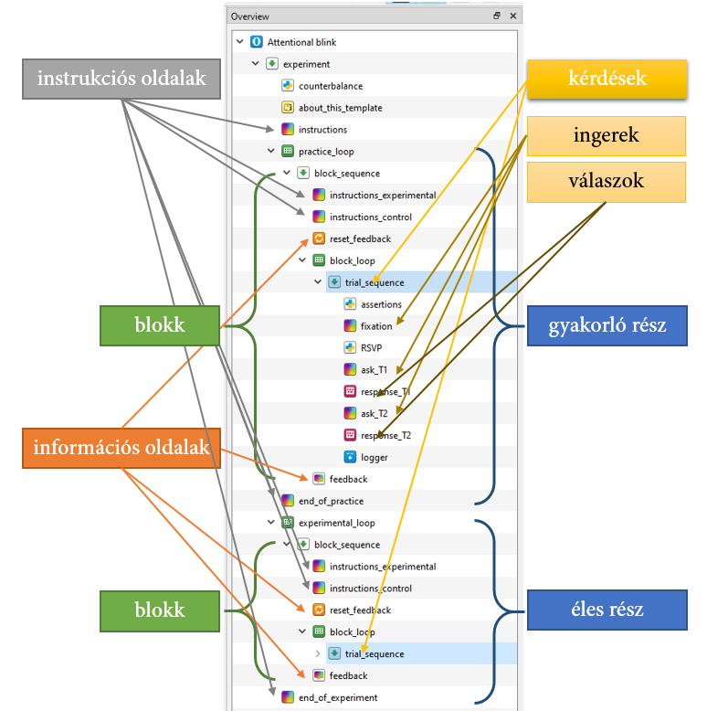
Válasszuk ki a 4.15 ábrán látható itemeket, és vizsgáljuk meg a Tab ablakban, hogyan szolgálhatják az itt látható egyes beállítások a kísérlet leírását.
3\. A kísérletet leíró állomány tesztelése. A kísérlet szerkesztése során időnként tesztelnünk kell a kísérletet, meg kell győződnünk arról, hogy minden az előzetes tervnek megfelelően került kialakításra. Ehhez a Run / Quick run menüpontot válasszuk ki, vagy használhatjuk a Ctrl+Shift+W gyorsbillentyűt is. Használhatjuk az eszköztár megfelelő ikonját is (4.16 ábra).
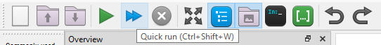
A kísérlet a korábban látott módon lefut, de néhány, a teszteléshez nélkülözhető lépés kimarad. Például nem kell gondoskodnunk a válaszok tárolásáról, vagyis nem jelenik meg dialógus doboz a CSV állomány célkönyvtáráról. Továbbá, a kísérletbe beépített várakozási időket is figyelmen kívül hagyja a gyors futtatás funkció. A kísérletből az ESC billentyűvel tudunk kilépni.
4. Adatgyűjtés az elkészült, kísérletet leíró állomány segítségével. Amennyiben ellenőriztük, és több körben teszteltük az kész kísérletet, akkor kezdődhet az adatgyűjtés. Kísérleti személyeket hívunk, és számukra is lefuttatjuk a kísérletet, ők pedig az instrukcióknak megfelelően megadják az egyes ingerekre a válaszukat. A kísérlet futtatásához Run / Run in window menüpontot válasszuk ki, vagy használhatjuk a Ctrl+R gyorsbillentyűt is (4.17 ábra . Használhatjuk az eszköztár megfelelő ikonját is (4.18 ábra).
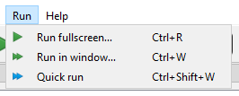
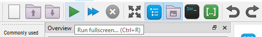